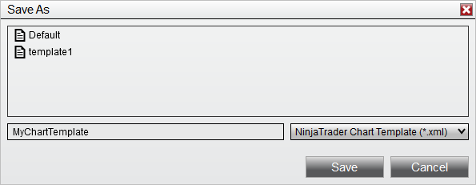

|
<< Click to Display Table of Contents >> Saving Chart Defaults and Templates |


|
Saving Chart Defaults and Templates
|
<< Click to Display Table of Contents >> Saving Chart Defaults and Templates |
|
NinjaTrader allows you to save many of your customized chart settings as default, or to save templates for later use. This can save time by automatically setting up your Data Series, indicators, NinjaScript strategies, chart properties, and drawing objects the way you prefer. Saved default settings apply to any new instances of these items that you create, while templates can be applied to either new or existing items.
 Understanding Data Series default settings
Understanding Data Series default settings
Each Period Type and Chart Style can have different default settings saved for the customizable Data Series parameters. Once saved as default, the customized parameters will load when the Period Type is selected.
What is SavedFor Period Types, all parameter settings are saved, with the following exceptions:
•Bar width •End date will default to the current day's date •Label will default to the instrument name •Panel will stay on its current panel •Scale justification will default to "Right" •Session template will default to "<Use instrument settings>" For Chart Styles, all parameters within the Chart Style section of the Data Series window will be saved.
Saving Custom Data Series Settings by Period TypeTo save Data Series parameters as default for a particular Period Type:
1. Set the Data Series parameters to desired values 2. Left mouse click on the preset text located in the bottom right of the properties dialog. Selecting the option save will save these settings as the default used every time you select that period type for a Data Series.
If you change your settings and later wish to go back to the original settings, you can left mouse click on the preset text and select the restore option to return to the original settings.
1. In the image above, we have selected the Minute Period Type.
2. Notice the preset text changes to preset minute. By clicking save, data series parameters will be saved for the Minute Period Type specifically.
Saving Custom Data Series Settings by Chart StyleTo save Data Series parameters as default for a particular Chart Style:
1. Set the Chart Style parameters to desired values 2. Right mouse click on the Chart Style dropdown menu, then select Set Preset For "X" Chart Style, where X represents the currently selected Chart Style.
In the image below, we can set the defaults for the Candlestick Chart Style specifically.
|
 Understanding indicator default settings
Understanding indicator default settings
Each individual indicator's parameters can be saved as default or as a custom template. Once saved as default, the customized parameters will load whenever the specified indicator is added to a chart.
What is SavedAll parameter settings are saved, with the following exceptions:
•Input series will default to the first Data Series applied to the chart •Panel will use the default NinjaTrader settings
Saving Custom Indicator SettingsTo save Indicator parameters:
1.Set the Data Series parameters to desired values 2.Left mouse click on the template text located in the bottom right of the properties dialog. Selecting save will open the Save window, in which you can enter a name for a new template or select an existing template to overwrite it. Naming it Default will save these settings as the default used every time you apply that indicator to a chart. 3.Click the Save button when finished
If you wish to load a previously saved template, you can select the load option after left mouse clicking on the template text. If you change your settings and later wish to go back to the original settings, you can left mouse click on the template text and select the restore option.
In the image below, the parameters will be saved for the selected SMA indicator. Any time an SMA indicator is applied to a chart, the saved parameters will be loaded.
|
 Understanding strategy templates
Understanding strategy templates
Please see the Working with Automated Strategies page for more information on saving and managing templates for NinjaScript strategies. |
 Understanding chart property default settings
Understanding chart property default settings
Customized chart properties can be saved as default. Once saved as default, the customized properties will be loaded whenever a new chart is opened. The Chart Properties window can be opened by left mouse clicking on the Properties icon in the chart toolbar, by selecting the menu item Properties from the right click menu in the chart, or via the default CTRL + T Hot Key.
What is SavedAll property settings are saved.
Saving Custom Chart Property SettingsTo save custom chart parameters as default:
1.Set parameters to the desired values 2.Right mouse click within the chart window, then select the Templates menu item, then select Save as Default.
All chart properties can be restored to NinjaTrader default settings by left mouse clicking on the preset text within the Chart Properties window, then selecting restore.
In the image below, all chart properties will be saved as the default for new charts.
|
 Understanding Drawing Object templates
Understanding Drawing Object templates
Please see the Working with Drawing Tools & Objects page for more information on saving and managing drawing object templates. |
Chart properties, chart panel properties, and indicator settings can be saved as a Chart Template. A Chart Template can be applied to a new chart or an open chart to load customized chart settings, provided the template and chart share the same number of Data Series objects. Since templates are intended to be able to be applied to any data series, they do not include items that would be unique to the data series, such as drawing objects. A Trend Channel drawn on AAPL would not be relevant on a COKE chart.
Saving a Chart TemplateTo save a Chart Template:
1.Once you have a chart set up to your liking, right mouse click within the chart and select the menu item Templates, followed by Save As 2.The Save As window will appear. Enter a name for your template and press the save button.
In the image below, we are saving a new chart template named "MyChartTemplate."

Changing the Default Chart TemplateA Chart Template can be saved as the default template used for all new charts. Once saved, the default template will determine the properties of each new chart opened, unless you specify a different template.
To save a Chart Template as default:
1.Right mouse click within an open chart and select the Templates menu 2.Select the menu item Save as Default |
 How to load, remove, or rename a Chart Template
How to load, remove, or rename a Chart Template
Loading a Chart TemplateA Chart Template that was previously saved can be loaded on any chart that has the same number of Data Series as the chart which was used to save it.
To load a Chart Template:
1.Right mouse click and select the menu item Templates followed by the Load menu item 2.The Load window will appear. Select the template to load from the list of templates, then press the Load button.
Removing a Chart TemplateTo remove a Chart Template from the list of saved templates:
1.Right mouse click within a chart and select the menu item Templates followed by either the Save As or Load menu items 2.The Save or Load window will appear, depending on which menu item you selected. Right mouse click the template for removal from the list of templates, then select the Remove menu item.
Renaming a Chart TemplateTo rename an existing Chart Template from the list of saved templates:
3.Right mouse click within a chart and select the menu item Templates followed by either the Save As or Load menu items 4.The Save or Load window will appear, depending on which menu item you selected. Right mouse click the template from the list of templates, then select the Rename menu item.
In the image below, we can either remove or rename the selected Chart Template.
|